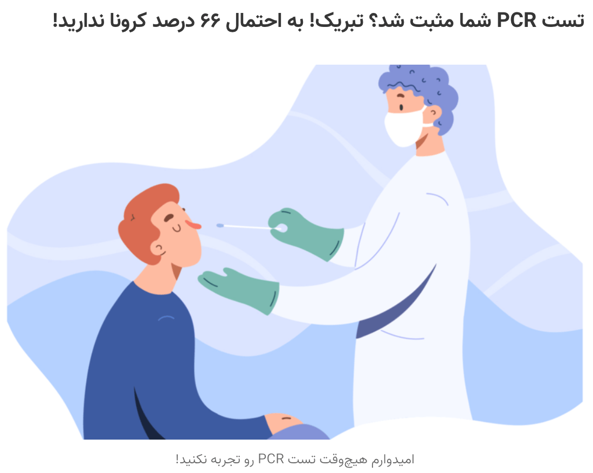
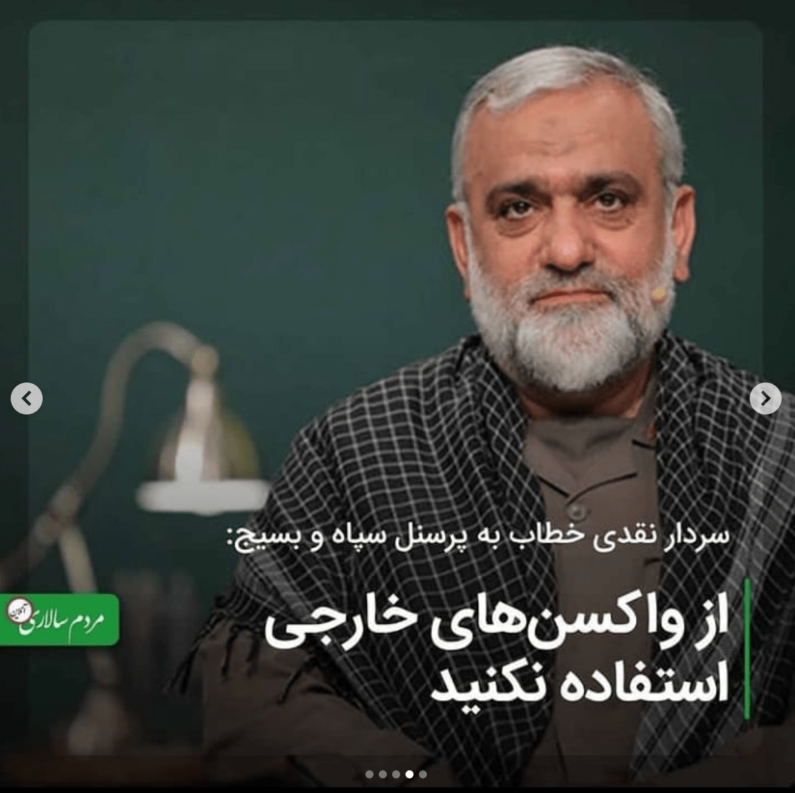
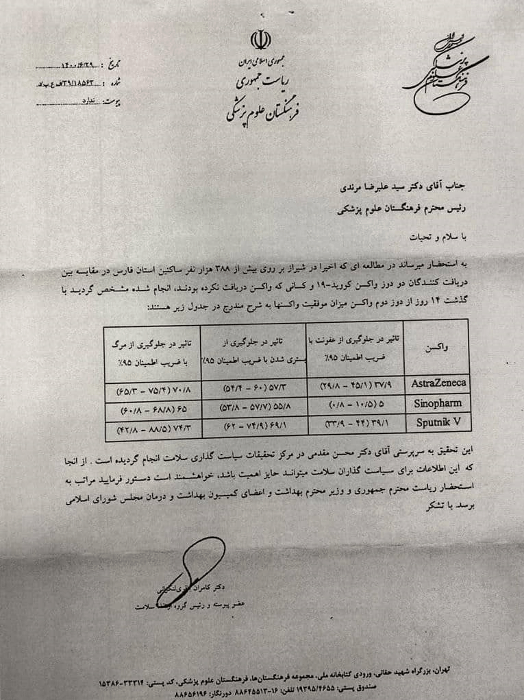

منشاء پیدایش و شیوع کرونا و اهمیت آن
بیایید به عقب برگردیم. جنگ ایران و رژیم بعث عراق. جالب است بدانید که سلاحهای شیمیایی را آلمان برای صدام فراهم میکرد. از آن جالبتر اینکه آلمان کشوری بود که به رایگان بیماران شیمیایی ایرانی را درمان میکرد! هدفشان چه میتواند باشد؟ آیا کسی برای سلامتی از ضربه دشمن به آغوش او پناه میبرد؟ حقیقت درمان رایگان این است که آلمان میخواست تاثیرات سلاحهای خود را بررسی و تحلیل کند تا بتواند سلاحهای جدیدتر که برای ایرانیها مرگبارتر باشند را تولید کند.
شناخت مبدا شیوع کرونا از همین جهت مهم است. چونکه اگر ما پروتکلهای درمانی و بهداشتی را از کسانی بگیریم که خودشان تولید کننده ویروس هستند واضح است که چه بلایی سرمان خواهد آمد. چه بسا پروتکلهای بهداشتی و درمانی خودش وسیلهای باشد که آمار تلفات را بیشتر کند، سیستم ایمنی را تضعیف کند و مبارزه با بیماری را فرسایشی و سخت کند.
آلمان در دفاع مقدس: هم قاتل هم ناجی ایران!
در مورد پیدایش و تولیدکننده بیماری کرونا یک مستند بسیار مناسب تولید شده است با نام «نمایش کرونا». در این مستند اسناد مختلفی از تولید آزمایشگاهی ویروس نوترکیب کرونا تا اظهارنظرهای مقامات آمریکایی در مورد حتمی بودن وقوع همهگیری را گردآوری کرده است. این مستند ۲۱ دقیقه ای در تحلیلهای شما کمک میکند.
مستند نمایش کرونا - کرونا ویروس تولیدشدهجنگ بیولوژیک چیست؟
رهبر معظم انقلاب در پیامشان خطاب به سرلشگر باقری احتمال جنگ بیولوژیک بودن کرونا را عنوان کرده اند. در این بخش میخواهیم با جنگ بیولوژیک بیشتر آشنا شویم..
این اقدام با توجه به قرائنی که احتمال «حملهی بیولوژیکی» بودن این رویداد را مطرح کرده میتواند جنبهی رزمایش دفاع بیولوژیک نیز داشته و بر اقتدار و توان ملّی بیفزاید. رهبر معظم انقلاب ۲۲ اسفند ۱۳۹۸
جنگ بیولوژیک عنوان جدیدی به نظر میآید اما باید بدانیم که در طول تاریخ بارها و بارها رخ داده است. حملات بیولوژیک میتواند برای ضربه زدن یا ترور کردن یک فرد خاص اتفاق بیوفتد یا برای به عنوان یک ابزار کشتارجمعی مورد استفاده قرار بگیرد. نمونه افرادی که هدف ترور بیولوژیک قرار گرفته اند مانند شهید کاظمی آشتیانی، شهید فرجالله سلحشور و استاد نادرطالبزاده هستند. خوراندن سم یکی از اقسام ترور بیولوژیک است. بنابراین بعضی از امامان معصوم مثل امام حسن مجتبی(ع) قربانی ترور بیولوژیک هستند.
 قربانیان ترور بیولوژیک
قربانیان ترور بیولوژیک
نمونه جنگ بیولوژیک: انتشار ویروس ابولا در یمن
قسم دوم جنگ بیولوژیک همانطور که اشاره کردم، استفاده از عوامل زیستی به عنوان یک سلاح کشتار جمعی است. تولید ویروسهای آزمایشگاهی و انتشار آن در جامعه دشمن از این قسم است. مثلا یمن یکی از قربانیان جنگ بیولوژیک است. بمبهای شیمیایی که صدام علیه ایرانیان استفاده کرد یک حمله بیولوژیکی است. یکی از لوازم تولید ویروسهای قویتر شناخت بیشتر از نژاد دشمن مورد نظر است. صحبتهای پروفسور کرمی در مورد جمعآوری اطلاعات ژنوم ایرانیان را میبینید که میگوید با استفاده از اطلاعاتشان میتوانند سلاحهای نژادی تولید کنند.
پروفسور کرمی: تحقیق روی ژن ایرانی برای تولید سلاح نژادی
آمار ساختگی ابتلاء
بسیاری از متخصصان در سراسر جهان علیه ماجرای کرونا اعتراض کرده اند. یکی از ادعاهایی که متخصصین میگویند این است که ویروس کرونا چیزی بیشتر از یک آنفولانزای معمولی نیست! اما چرا این ویروس تا به این حد معروف شده است؟ دکتر الکه و جمع کثیری از پزشکان و پرستاران مخالف واکسن عقیده دارند که اساسا ویروس کرونا بیماری ای نیست که در سطح یک همهگیری باشد و بیان میکند که همهگیری ساختهی رسانههاست و واقعیت ندارد. یکی از عللی که رسانهها توانسته اند کرونا را اینقدر بزرگ جلوه بدهند آمار بالای ابتلاست که با استفاده از تست PCR سنجیده میشود.
دکتر الکه: همهگیری ساختهی تست PCR است
تست PCR از نظر علمی برای تشخیص صرفا کرونا نیست. بلکه سرماخوردگی معمولی و انواع مختلف آنفولانزا را هم مثبت اعلام میکند. دومین نکته در مورد تست PCR اینکه این تست امروز به روش علمی انجام نمیگیرد و خود همین عاملی شده است که آمار مثبت کاذب بسیار بیشتر شود. در دو تحقیق جداگانه وقتی تست PCR را به روش علمی انجام دادند تعداد مثبتها ۳۷٪ و ۹۰٪ کاهش پیدا کرد. نکته سوم در مورد آمار ابتلا کرونا وجود «مغالطه نرخ پایه» است. اگر با فرمول احتمال شرطی آشنا باشید میتواند این مغالطه را اثبات کنید. مغلطه نرخ پایه میگوید وقتی تعداد افراد مبتلا به بیماری نسبت به کل جمعیت کم باشد، نتایج مثبت کاذب بیشتری خواهیم داشت. یعنی اگر تست شما مثبت باشد با احتمال ۶۶٪ تا ۵۰٪ شما کرونا ندارید! ۶۶٪ را یکی از وبلاگنویسان ایرانی سرانگشتی محاسبه کرده و ۵۰٪ را از مصاحبه یک متخصص انگلیسی زبان شنیده ام. ویدیو روبرو موضوع تست PCR را بهتر توضیح میدهد.
تست PCR عامل آمارسازی ابتلا به کرونا
 معرفی مغلطه نرخ پایه در یک وبلاگ فارسی
و مطلب آخر هم این است که مسئله یک مسئلهی گذرا است، یک چیز فوقالعاده نیست؛ از این حوادث در کشور پیش میآید. البتّه من نمیخواهم مسئله را خیلی کوچک بگیرم امّا خیلی هم بزرگش نکنیم مسئله را. یک قضیّهای است پیش آمده، یک مدّتی است -مدّتی که انشاءالله خیلی طولانی نخواهد بود- این برای کشور وجود خواهد داشت، بعد هم رخت برمیبندد و میرود. رهبر معظم انقلاب ۱۳۹۸/۱۲/۱۳
علت آمار بالای فوتی کرونا
در قسمت قبل بررسی کردیم که چگونه تست کرونا آمار ابتلا را بطور دروغین بالا میبرد. اما سوالی که باقی میماند این است که آمار مرگ و میر کرونا چرا بالاست؟ اگر واقعا آمار ابتلا ساختگی و اغراق آمیز است بالاخره فوتیها چرا بالاست؟ سه علت برای بالابودن آمار مرگ و میر کرونا میتوان ارائه کرد. اولا تاثیر ترس بر تضعیف سیستم ایمنی بدن و دوما چنددارویی سوما شمارش فوتی با علل دیگر به حساب کرونا. در مورد دلیل اول بیشتر توضیح میدهم. در ویدیو مقابل توضیح علمی تاثیر ترس بر تضعیف سیستم ایمنی را مشاهده کنید تا با جزئیات آن آشنا شوید. دکتر طالب پور رئیس بیمارستان سینا میگوید که بعضی از بیماران کرونایی در اثر ترس از کرونا سکته میکنند!
ترس عامل تضعیف ایمنی و در نتیجه افزایش تلفات کرونا
سکته در اثر ترس از کرونا
مورد دوم آمار بالای مرگ و میر کرونا متاسفانه چنددارویی است. این عبارت را دکتر حریرچی بیان کرده است که در کلیپ روبرو میتوانید ببینید. چند دارویی یا پلی فارمسی به این معنی است که داروها و درمانهای متعدد و بعضا متناقض را به بیمار میدهند و خود عوارض این داروهاست که در نهایت سبب مرگ میشود. خانم دکتر زهرا شیخی نماینده مجلس میگوید ایران تنها ۲٪ بیماران کرونایی جهان را دارد اما ۲۷٪ کارآزمایی بالینی داروهای کرونا را انجام داده است. معنی این حرف چیست؟ یعنی داروهایی که تاثیرشان معلوم نیست را روی مردم ایران بصورت گسترده آزمایش میکنند و نتایج آن را به سازمان بهداشت جهانی اعلام میکنند. خانم دکتر مینو محرز هم به بی اثر بودن این داروها اعتراف میکند. در مورد داروهای مورد استفاده در بخش مربوط به مافیا نظام سلامت بیشتر توضیح خواهم داد. این داروهای بیخاصیت هم اکنون هم بصورت گسترده استفاده میشوند.
پلی فارمسی یکی از علل مرگ بیماران کرونایی
داروهای کارآزماییهای بالینی همگی بیخاصیت هستند
بیش از نیمی از فوتیها بخاطر عوارض داروهاست نه کرونا
علت سوم آمار بالای فوتی های کرونایی این است که معیار ثبت فوتی به عنوان فوت کرونایی فقط این است که فرد هنگام مرگ PCR مثبت داشته باشد. بالاتر توضیح دادیم که اساسا نتایج این تست اغلب واقعی نیست. دوما اینکه مبتلا بودن به کرونا با مرگ در اثر کرونا متفاوت است. ممکن است فردی در اثر فلان بیماری قلبی فوت کند و همزمان تست کرونای او مثبت باشد. کرونا مثبت شدن به معنی مرگ در اثر کرونا نیست. بگذریم از گزارشهای مختلفی که میگویند اصرار خاصی در ثبت فوتیها به عنوان فوتی کرونایی در ایران و در جهان وجود دارد.
گزارشهایی از ثبت فوتیهای مختلف به عنوان فوتی کرونا
اگر شنیدید که کسی میگوید کرونا دروغ است به دیده تحقیر به او نگاه نکنید. میلیون ها نفر در اقصا نقاط دنیا چنین نظری دارند و کرونا را فقط یک بیماری معمولی میدانند. بر اساس این مستندات و مستنداتی که در بخش سازمان جهانی بهداشت ارائه خواهد شد میتواند دروغ بودن اساس کرونا را اثبات کند. آیا از کشورهایی که هیچ خبری از کرونا نیست خبر دارید؟ ویدیوهای زیر را ببینید. سازمان جهانی بهداشت نگران فاجعه انسانی در نیجر در اثر کرونا بود. چه شد؟ هیچ! تانزانیا کشور بدون کرونا و واکسیناسیون. مصر را ببینید. در ویدیو زیر یکی از ویدیو های یک گردشگر را گذاشته ام که با یک جوان مصری صحبت میکند و او می گوید هر روز فقط ۱۰ تا ۲۰ مورد ابتلا کرونا در مصر وجود دارد درحالی که تقریبا هیچ پروتکل بهداشتی ای رعایت نمیشود. حتی خود چین را ببینید که در شهر ووهان پارتی در استخر برگزار کرده اند تا بگویند کرونا تمام شده. جشن سال نو چینی هم با اجتماعات عجیب و غریب همراه بود. گویا کرونا از چین اعراض کرده است!
نیجر - بدون کرونا - بدون پروتکلها
مصر کشور بدون کرونا
جشن سال نو چینی در ووهان - کرونا صفر!
دفعه بعد که با ادعای دروغ بودن کرونا مواجه شدید اسناد علمی و شواهد عینی را با خود مرور کنید.
مشکلات قدیمی نظام سلامت و وجود مافیا
حرف و حدیثها در مورد نظام پزشکی از دیرباز وجود داشته. مثلا اینکه بعضی پزشکان علی رغم درآمدهای بالایشان حاضر به پرداخت مالیات نیستند و حتی حاضر نیستند کارتخوان در مطبها قرار دهند چون ممکن است مشمول مالیات شود. یک گزارش در همین رابطه در ویدیو روبرو میتوانید ببینید. گزارشهای صدا و سیما از فرارهای مالیاتی بعضی پزشکان بسیار بسیار متعدد است. البته این به معنی فساد همه پزشکان نیست و واضح است که هر قشری هر نوع آدمی دارد. اما مسئله بالاتر از فساد چند نفر است. مورد دیگر اختلاف تعرفه و حقوق کادر مختلف درمان است. مثلا پزشک عمومی و پزشک تخصصی و پرستار از نظر درآمد اختلاف بسیار بسیار زیادی دارند.
بعضی پزشکان از کارتخوان فراری اند!
افزایش تعرفه ناعادلانه در نظام پزشکی
مسئله وجود فساد در ساختار نظام سلامت و همچنین مافیا دارویی است. مافیا دارویی عنوان متداولی هست که خیلی میشنویم. مثلا دکتر نمکی هم در مورد مافیا دارو صحبت کرده. اقای دکتر طریقت منفرد وزیر اسبق بهداشت خودش به ساختار نظام پزشکی اعتراض داشته و میگوید که وزیر بهداشت نباید خودش ذی نفع باشد. میگوید آن هایی که باید به تخلفات پزشکان رسیدگی کنند خودشان پزشک هستند. و موارد دیگری هم بیان میکنند. مثلا بررسی ای که او درمورد ۴۴ وزیر بهداشت از ۱۶ کشور پیشرفته انجام داده بود به این نتیجه رسید که ۴۱ نفرشان پزشک نبودند و آن سه نفر هم که پزشک بودند فعالیت غیرانتفاعی نداشتند. دکتر قاضی زاده هاشمی در مورد مافیا دارو در درمان کرونا صحبت کرده و گفته که داروی [بی تاثیر] رمدسیویر دارد ماهانه ۳ هزار میلیارد تومان انتفاع برای مافیا دارو ایجاد میکند.
مافیا دارو، وزیر بهداشت، قوه قضائیهمافیا دارو و سرپیچی از قانون
۳هزار میلیارد تومان انتفاع ماهانه داروی بی تاثیر کرونا
با این حجم از تخلفات و تعارض منافعها حق بدهید که افرادی نسبت به توصیهها نظام پزشکی چه در بحث کرونا چه خارج از آن مشکوک باشند. پزشکانی که امروز پروتکلهای درمانی یا پروتکلهای بهداشتی را اعلام میکنند آیا خودشان ذی نفع نیستند؟ آیا تصمیماتی که در مورد داروهای تجویزی به بیماران کرونایی میگیرند یا تصمیم به واکسیناسیون عمومی میگیرند ممکن است از نظر مالی به نفع یا به ضررشان باشد؟ اگر بلی آنگاه آیا تجویزهای آنها تحت تاثیر نفع شخصی شان نخواهد بود؟ داروی رمدسیویر را ببینید. این دارو را سازمان بهداشت جهانی کارآزمایی کرده. تعداد زیادی هم بیمار ایرانی در این کارآزمایی بوده اند. در نهایت هم اعلام کردند که این دارو had less or no effect یعنی اثرش ناچیز یا هیچ بود. البته در واقع نرخ فوتی افرادی که در کارآزمایی شرکت کرده اند را وقتی میبینید به این نتیجه میرسید که نه تنها موثر نبود بلکه از نرخ فوتی عادی کرونا هم بیشتر بود یعنی دارو خودش کشنده بود! حالا این دارو همچنان بطور گسترده تجویز میشود و جزو پروتکلهای درمانی وزارت بهداشت است و قیمت های چند میلیونی در بازار آزاد پیدا کرده. حالا اگر داروی ارزان قیمتی در داخل کشور تولید شود آیا مافیا دارو از خیر سود ماهیانه ۳هزار میلیارد تومانی شان خواهد گذشت؟
دکتر طریقت منفرد - نظام سلامت تعارض منافع ایجاد میکند
دکتر لعل روشن - مافیا دارو
مورد دیگر در سابقه و وضعیت وزارت بهداشت و بطور کلی نظام سلامت پرونده تاریک آن در زمینه کاهش نسل و عقیمسازی است. شاید این نسل کشی را تا به حال نشنیده باشید. ایران ۳۰ سال دیگر پیرترین کشور دنیا خواهد شد! این یعنی نیرو کار وجود ندارد. نیروی نظامی وجود ندارد. این یعنی شیعه دیگر اکثریت نیست. فرانسه یکی از کشورهاییست که بدترین شرایط جمعیت را خواهد داشت. آیا ایران هم چنین آینده ای را خواهد دید؟ ایران همین اوایل انقلاب نرخ رشد ۶ درصدی داشت. امروز به ۰.۶ درصد رسیده است. آیا این سقوط رشد جمعیت طبیعی بوده؟ در قسمت سازمان جهانی بهداشت توضیح بیشتر خواهم داد.
خیانت وزارت بهداشت و نسل کشی ایرانیان
بحران جمعیت در کلام رهبر - تن انسان میلرزد
کاهش جمعیت بلای جان فرانسه
میخواهم بگویم اگر امروز از خطر کاهش جمعیت و عقیمسازی صحبت کنیم صرفا یک بدبینی و نظریه توطئه نیست. چیزیست که برای ما یکبار اتفاق افتاده است و اگر هشیار نباشیم دوباره از این سوراخ گزیده خواهیم شد. پرواضح است که مجری سیاست کاهش جمعیت در داخل کشور جایی نمیتواند باشد مگر نهادهای رسمی متولی امر سلامت جامعه مثل وزارت بهداشت. به ما حق دهید که آنچیزی که وزارت بهداشت میگوید را بدون تحقیق و بررسی تخصصی و مشورت با متخصصان متعهد نپذیریم. وزارت بهداشت کاری را کرده که صدها صدام نمی توانستند انجام دهند و آن نسل کشی ما بوده است. به ما حق دهید که صحبتهای نماینده مجلس آقای حاجی دلیگانی را باور کنیم که میگوید وزارت دفاع آمریکا در وزارت بهداشت ایران ما نفوذ دارد. نمایندگان سازمان جهانی بهداشت در وزارت بهداشت چه میکنند؟ سخنان حجت الاسلام مهدوی ارفع را بشنویم که چگونه نفوذ و تبعیت سازمان جهانی بهداشت اجازه استفاده از داروهای موثر درمان کرونا را نمیدهد. وقتی میبینیم سردار جلالی رئیس سازمان پدافند غیرعامل وقتی از ۵ بهمن ۹۸ یعنی یکماه قبل از اعلام رسمی کرونا، قرارگاه های دفاع زیستی را در تمام استان ها تشکیل دادند، ۵ مانور دفاع بیولوژیک انجام دادند، ۲۶ نهاد مرتبط را توجیه کردند و در اول اسفند تمام آمادگی لازم برای مقابله با کرونا را داشتند اما ستاد کرونا که تشکیل شد تمام زحمات ایشان کنار گذاشته شد و حتی اجازه شرکت در جلسات ستاد کرونا را پیدا نکردند، به ما حق بدهید که به تصمیمهای ستاد ملی مبارزه با کرونا مشکوک باشیم. اگر ساختاری که سردار جلالی برای آن تلاش کرده بود، حفظ میشد ما اساسا امروز به چنین وضعیتی دچار میشدیم؟
وزارت دفاع آمریکا در وزارت بهداشت نفوذ دارد
تبعیت سازمان جهانی بهداشت و مقابله با دارو کرونا
ستاد مبارزه با کرونا یا تقویت کرونا؟
داروهای موثر در درمان کرونا
یکی از سوالاتی که وجود دارد این است که این همه در مورد واکسن تحقیق و پژوهش و تلاش صورت میگیرد. در مورد دارو چقدر تلاش شده است؟ آیا میتوانیم با پیدا کردن یک دارو موثر و مطمئن کرونا را تبدیل به یک بیماری عادی مثل سرماخوردگی کنیم و دیگر هیچ نیازی به قرنطینه و فاصله اجتماعی و حتی واکسیناسیون باقی نماند؟ یک دسته از اخبار در ایران و در جهان وجود دارد که داروهای موثری کشف یا تولید شده اند اما اجازه استفاده از آنها داده نمیشود. مثلا در مستند پلندمیک قسمت اول یکی از پزشکان آمریکایی خطاب به همکارانش میگوید شما میدانید که هیدروکلروکسین و زینک به درمان بیمار کرونایی کمک میکند اما چرا اگر از این دارو استفاده کنیم با ما برخورد میکنند؟ صحبت این پزشک در آمریکا انگار در ایران هم مصداقهایی دارد و گویا یک رویه جهانی است که اجازه درمان دارویی کرونا را نمی دهد. در بخش مربوط به سازمان بهداشت جهانی در این مورد بیشتر توضیح خواهم داد اما در این قسمت به معرفی داروهای کرونا میپردازم.
اولا یک نکته را لازم است که بگویم، به محض اینکه در مورد دارو کرونا صحبت میکنم همه فکرشان به سمت طب سنتی یا اسلامی می رود و می گویند که این طب ها علمی نیستند یا ناکارآمد هستند. من فعلا نمی خواهم در این نوشته در مورد طبی غیر از طب مدرن صحبت کنم. تنها و تنها من دارو هایی را در اینجا معرفی می کنم که یا هم اکنون در داروخانه های رسمی وجود دارند یا افراد معتبری مثل نمایندگان مجلس معرفی کرده اند.
اخبار تولید انبوه ۴ دارو کرونا
بعضی از افراد، تجربههای خوبی در این زمینه انجام دادهاند و دارویی درست کردهاند، این دارو را یک جایی زیر نظر مسئولینی امتحان کردهاند و تصدیق شده، تأیید شده که موثّر است؛ با اینها مخالفت نشود. اطراف و اکناف، کسان زیادی هستند که ممکن است یک کار جدیدی بکنند. نه اینکه حالا هر ادّعائی را قبول کنند؛ نه، امّا همان کارهایی را که ادّعا میشود، مورد مداقّه(۲۱) قرار بدهند. رهبر معظم انقلاب ۱۳۹۹/۱۰/۱۹
یکی از داروها داروی آلرگارد یا استاپ سیویر است. یک مستند حدودا نیم ساعته برای این دارو تولید شده است که تجربه استفاده از این دارو و نتایج کارآزمایی بالینی دارو را نشان میدهد. همینقدر خلاصه به شما بگویم که این دارو حتی یک نفر فوتی هم نداشته. بیمارستانهایی که از این دارو استفاده میکردند در پیک دوم کرونا، یک هفته تمام هیـــچ فوتی کرونایی نداشتند! برای اطلاعات بیشتر به مستند کامل رجوع کنید. هم مستند و هم قسمتی از مستند را در کلیپ های روبرو قرار داده اند میتوانید ببینید.
گلچین مستند دارو کرونا آلرگارد
مستند کامل دارو کرونا آلرگارد
درمان دیگری را که اقای دکتر سجادی مطرح کرده اند بالابردن ویتامین D است. دکتر سجادی استاد دو نفر از وزرای بهداشت بوده و فارغ التحصیل فوق تخصصی از آمریکاست و از نظر تخصصی انسان بسیار معتبری است. او میگوید کسی که ویتامین D اش فلان مقدار به بالا باشه در اثر کرونا فوت نمی کنه. مقاله مربوط به این درمان رو همان ماه های اول کرونا نوشتن و چاپ کرده اند. جالب است که این مقاله را برای یکی از مجلات آمریکایی فرستاده است و زنگ زده اند و گفته اند که دکتر سجادی شما مقاله تون درسته اما شرکت های دارویی که میخواهند رمدسیویر بفروشند اجازه نمی دهند که مقاله شما چاپ شود. چون شما می گویید اگر ویتامین دی شما بالا باشد دیگه نیاز به مراجعه به بیمارستان ندارید.
دکتر سجادی و درمان کرونا با ویتامین D
داروی دیگر اسپری PHR160 است. در بخش روبرو من اولا یک گزارش از صدا و سیما که خبر ساخت و تولید ۴ دارو ضد کرونا را میدهد قرار داده ام و همچنین توضیح دارو PHR160 را هم گذاشته ام. جالب است که مستند دارو آلرگارد از شبکه تهران پخش شده است. صحبت دکتر سجادی در شبکه یک سیماست. گزارش تولید ۴ دارو ضد کرونا هم خبر فکر کنم ۲۲ است. توضیحات دارو PHR160 هم از شبکه سه است. میخواهم بگویم که تمام دارو هایی که اینجا معرفی کرده ام همگی دارو های رسمی و معتبر است که هم کارآزمایی گذرانده اند هم تولید انبوه شده اند و حتی در دارو خانه ها هم همین الان موجود اند.
داروی ضد کرونا با نام PHR160
صحبت های دو نفر از نمایندگان مجلس وجود دارد که میگویند دارویی پیدا کرده اند اما وزارت بهداشت اصلا توجه نمی کند و همکاری نمیکند تا با طی مراحل قانونی مجوز ها را بگیرد. فاطمه محمدبیگی، نماینده مردم قزوین، البرز و آبیک و عضو کمیسیون بهداشت و درمان مجلس گفت: دانشمندان قزوینی موفق شدند که داروی آیورمکتین، داروی پیشگیری و درمان بیماری کرونا را تولید کنند و با اینکه این دارو ثبت شده است اما این دارو دپو شده و متأسفانه اجازه توزیع ندارد و مافیای دارویی، داروی مشابه خارجی را وارد کشور میکند.
تذکر نماینده قزوین به عدم توزیع داروی کرونا: آیورمکتین
فلاحی، نماینده مجلس: خبرهایی داریم از اینکه برخی استانها در کشور داروهایی ساختهاند کما اینکه یک نمونه از آن را آوردهام که ۸ ماه قبل برای درمان قطعی کرونا معرفی شده بود و به دانشگاه بقیهالله نیز داده شده اما جوابی در این زمینه ندادهاند. بنابراین مردم تلف میشوند و کسی به فکر نیست.
فلاحی، اعتراض به عدم جوابگویی به دارو کرونا
سازمان جهانی بهداشت
سازمان جهانی بهداشت یا World Health Organization(WHO) به عنوان مرجعی برای امور پزشکی محسوب میشود. در زمینه کرونا هم این سازمان پروتکلهای بهداشتی و درمانی را تدوین میکند و برای اجرا به کشورهای تابع ابلاغ میکند. اما حرف و حدیثها و حواشی این سازمان در داخل و خارج کشور بسیار زیاد است. اول آنکه برخلاف اسمی که این سازمان دارد ما تصور میکنیم که متخصصان از سراسر دنیا می توانند در این سازمان حاضر شوند و مباحثات و تحقیقات علمی انجام دهند و جمع بندی کار کارشناسی شان را اعلام کنند اما در واقعیت اصلا اینطور نیست.
دوم حامیان مالی این سازمان است. بزرگترین حامی مالی سازمان بهداشت جهانی سازمان ملل است و یکی از حامیان مالی سازمان ملل بنیاد صهیونیستی راکفلر است. این بنیاد برنامههایی را برای کاهش جمعیت جهان به اجرا درآورده و سازمان جهانی بهداشت یک ابزار برای آنها بوده است. دومین حامی مالی بزرگ سازمان ملل بنیاد بیل و ملیندا گیتس است. بیل گیتس همزمان مالک چند شرکت واکسن سازی هم هست. این یک تعارض منافع است. چطور شرکت های دارو و واکسن سازی میتوانند تامین مالی نهادی را انجام دهند که می تواند محصولاتشان را پرفروش کند و در عین حال هیچ چشمداشتی از کمک مالی خود نداشته باشند؟
راکفلر - حامی مالی سازمان جهانی بهداشت
سوم آنکه خیلی از متخصصان جهان از جمله بعضی متخصصان آمریکایی خودشان از مخالفان تصمیمات این سازمان بوده و هستند. مثلا یکی از انتقاداتی که از قبل از کرونا داشتند این است که چرا تعاریف بیماری ها را جابجا میکند. مثلا بیماری کلسترول وقتی اعلام میشد که فرد در هر دسی لیتر خونش ۲۴۰ میلی گرم باشد اما این عدد را به ۲۰۰ جابجا کردند و در نتیجه افرادی که بیماری کلسترول داشتند ۸۶٪ افزایش یافت! آنهم فقط با جابجا کردن تعریف! در ویدیو مقابل بیشتر میتوانید این مورد اطلاعات کسب کنید. یکی از متخصصان خارجی را گوش میدادم که می گفت سازمان جهانی بهداشت چند سال قبل از کرونا تعریف همهگیری را تغییر داده است و تعریف جدید از تعریف قبلی خیلی دست باز تر است. یعنی دست سازمان را برای اعلام همه گیری خیلی باز گذاشته است. اگر ویدیو اش را پیدا کنم در همین صفحه اضافه میکنم.
سازمان جهانی بهداشت و تجارت بیماری!
چهارم آنکه شاید فرض کنیم تمام کشورها و تمام پزشکان دنیا با سازمان جهانی بهداشت موافق هستند و تبعیت میکنند. این یک اشتباه بزرگ است. از حدود ۱۹۰ کشور جهان تنها و تنها ۳۰ کشور هستند که تابع سازمان جهانی بهداشت هستند. حتی بعضی از ایالت های آمریکا هم پروتکلهای سازمان جهانی بهداشت را قبول نمی کند و پروتکلهای متفاوتی را اجرا میکند. بسیاری از متخصصان آمریکایی (مستند پلندمیک ۱ را ببینید)در مورد این پروتکلهای بهداشتی و درمانی کرونا که سازمان جهانی بهداشت ابلاغ میکند میگویند مثل اینکه (از نظر پزشکی) ما باید کاری غیر از کاری را بکنیم که آن ها ابلاغ میکنند. بسیاری از متخصصان پروتکلهای بهداشتی مثل ماسک را کاملا نفی میکنند. در قسمت روبرو ویدیویی از گفتگو دکتر طریقت منفرد وزیر اسبق بهداشت در برنامه تلوزیونی عصر قرار دادم.
دکتر طالب زاده و دکتر طریقت منفرد - سازمان آمریکایی بهداشت
پنجم حواشی انتصابات روسای سازمان جهانی بهداشت است. این افراد سابقه تاریکی در کشورهای خود داشته اند و انتصاب آنها پر از حاشیه و مخالفت بوده است. یکی از ویدیوهای روبرو با عنوان سابقه تاریک روسای سازمان جهانی بهداشت این موضوع را بررسی میکند.
سابقه تاریک روسای سازمان جهانی بهداشت
ششم یک موضوع فقهی است. ما آیت الکرسی را بلد هستیم. در قسمتی از این آیات آمده: فَمَن يَكفُر بِالطّاغوتِ وَيُؤمِن بِاللَّهِ فَقَدِ استَمسَكَ بِالعُروَةِ الوُثقىٰ. رهبری در مورد این آیه توضیحاتی دارند:
حالا من یکی از این مفاهیم را مِن باب نمونه عرض بکنم. فرمود: فَمَن یَکفُر بِالطّاغوتِ وَ یُؤمِن بِاللهِ فَقَدِ استَمسَکَ بِالعُروَةِ الوُثقیٰ لَاانفِصامَ لَها؛ این یک معرفتی است، این یک اصل است؛ کفر به طاغوت و ایمان به خدا. یعنی ما همهی عالم وجود را تقسیم میکنیم به دو قسمت: یک قسمت منطقهی نفوذ طاغوت است، باید به آن کفر ورزید؛ یک قسمت منطقهی نفوذ الله است، باید به او ایمان آورد، باید او را باور کرد؛ هویّت ایمانی در مقابل هویّت کفر. این به معنای این نیست که ما دائم بایستی با هر کسی که در هویّت کفر است بجنگیم؛ این معنایش مقاتله نیست؛ این معنایش عدم ارتباط هم نیست؛ این معنایش [عدم] تبادل معلومات هم نیست؛ این معنایش استقلال هویّت ایمانی و مرزبندی هویّت ایمانی است تا [انسان] بتواند در مقابل هویّت طاغوت و هویّت کفر، خودش را حفظ کند، نگه دارد، تکمیل کند، رو به پیشرفت حرکت کند. رهبر معظم انقلاب ۱۳۹۶/۰۲/۰۷
لازمه کفر به طاغوت شناخت طاغوت است. آیا سازمان جهانی بهداشت در منطقه نفوذ طاغوت است یا در منطقه نفوذ الله؟ این سازمان که حامیان مالی آن آمریکا و صهیونیستهای امثال راکفلرها هستند آیا منطقه نفوذ الله است؟ بنابراین سازمان بهداشت جهانی بدون شک یک سازمان طاغوتی است و کفر به طاغوت واجب است. کسی میتواند مدعی ایمان و انقلابیگری باشد که اولا کفر به طاغوت داشته باشد. اما طبق صحبت های دکتر طریقت منفرد ایران در تبعیت از سازمان جهانی بهداشت با اختلاف زیادی اول شده است! عده ای نگویند که آنها متخصص هستند و رجوع به متخصص اصل عقلی است. بلی رجوع به متخصص اصل عقلی است اما از ترس شیر به دهان اون پناه نمی برند! سازمان جهانی بهداشت در واقع سازمان آمریکایی و صهیونیستی است. اگر بگویند خب اینها متخصص هستند من میگویم خیلی از متخصصان با آنها مخالف هستند و تصمیماتشان را نادرست می دانند و اعتراض می کنند اما صدایشان کمتر شنیده می شود. مخصوصا در ایران افرادی در وزارت بهداشت میخواهند شما باور کنید که پروتکل های بهداشتی و درمانی فقط و فقط همینی هست که آنها میگویند درحالی که اصلا اینطور نیست. سازمان جهانی بهداشت در سابقه خود اجرای طرحهای کاهش جمعیت و عقیمسازی را داشت است. در موشن گرافیکی که در ادامه میبینید عنوان میشود که از نظر هنری کسینجر(استراتژیست بسیار معروف و منتفذ آمریکا) مهمترین خطری که ایالات متحده را تهدید خواهد کرد رشد جمعیتی کشورهای جهان سوم است. ایالات متحده برای رفع این خطر اقدام به اجرای طرحهای کنترل جمعیت در کشورهای جهان سوم کرده است و کشور ما ایران هم یکی از قربانیان این طرح است. کرونا نیز ممکن است یکی از پروژههای کاهش نسل باشد. این را خانم دکتر شیخی نماینده مجلس هشدار میدهد و درخواست میکند که ماجرا کرونا و آمار آن بیشتر مورد بررسی قرار بگیرد.
ایران قربانی جنگ جمعیتی - مجری: سازمان جهانی بهداشت
نکند کرونا حربه کاهش نسل باشد؟
ششم بالاتر از سازمان آمریکایی بودن، سازمان جهانی بهداشت یک سازمان شیطانی است. نماد مار در لوگو سازمان را ببینید و توضیحات اقای اکبرآبادی در ویدیو مقابل را بشنوید. این مار مار مقدس شیطان پرستان است و همان ماری است که حضرت آدم و حوا را ترغیب به خوردن درخت ممنوعه کرد.
سازمان شیطانی بهداشت جهانی
هفتم تقلید کورکورانه از سازمان بهداشت جهانی است. باشد بعضی که میگویند سازمان بهداشت جهانی بالاخره متخصص ها هستند و ما باید استفاده کنیم فرضا ما قبول کردیم. اما مشکل دیگری هم وجود دارد آن این است که وزارت بهداشت و بسیاری از پزشکان در حال تقلید کورکورانه هستند و اصلا پروتکل ها و فرمان های سازمان بهداشت جهانی را بررسی تخصصی نمی کند. چشم بسته قبول می کند. در قسمت مقابل مستند کوتاه سازمان جهانی بهداشت و وزارت بهداشت ایران ببینید.
تقلید کورکورانه وزارت بهداشت از سازمان جهانی بهداشت
واکسن کرونا و واکسیناسیون عمومی
تا اینجا در مورد موارد مختلفی صحبت کردیم. غیرواقعی بودن و اغراق در اخبار کرونا، کشتار مردم دنیا با منع استفاده از دارو های موثر و استفاده از داروهای مرگبار، وضع پروتکلهای بهداشتی که خودشان عامل گسترش و شیوع بیشتر بیماری هستند، پرونده سیاه سازمان جهانی بهداشت و بسیاری سند و شواهد مختلف. مستند نمایش کرونا را در قسمت منشا کرونا برای شما قرار دادم. بسیاری از سردمداران طاغوتی دنیا قصد دارند تا جمعیت کره زمین را کاهش دهند. اما میخواهیم بررسی کنیم که آیا واکسیناسیون میتواند منجر به قتل عام و کشتار جهانی شود یا نه؟ اگر بلی صحبت های متخصصان را بشنویم.
بحران سالمندی ایران - اخبار صدا و سیما
توهم توطئه عبارتی است که بعضی افراد به آن اعتقاد دارند. اما جالب است که توهم توطئه در زبان انگلیسی Conspiracy theory است. یعنی «نظریه توطئه». یعنی خارج از کشور توطئه را به عنوان یک نظریه قبول دارند که میتوان اسناد و شواهد را ارائه کرد و نظریه را اثبات کرد اما همین نظریه در فارسی به «توهم» توطئه مشهور شده است! یعنی شما حتی حق فکر کردن در مورد توطئه را ندارید. در جواب آنهایی که به توهم بودن توطئه اعتقاد دارند ویدیو درمان رایگان رزمندگان شیمیایی توسط آلمان را ببینند که چطور کشوری که خودش بمب شیمیایی در اختیار صدام میگذاشت قربانیان شیمیایی آن بمب ها را به رایگان درمان می کرد. این افراد می توانند ببینند که در جنگ تحمیلی دو طرف جنگ ایران و رژیم بعث عراق نبود بلکه ایران از بیش از ۷۰ کشور دنیا اسیر در جنگ گرفت. یعنی بسیاری کشورهای دنیا علیه ایران مستشار نظامی فرستاده بودند. این هم توهم توطئه است؟ شعار فرزند کمتر زندگی بهتر و کاهش نرخ رشد جمعیت در ایران نقشه کیست؟ ۲۰ سال بعد ایران پیرترین کشور منطقه خواهد شد. این هم توهم است؟
توهم توطئه از نظر رهبر معظم انقلاب
اینها دشمنی نیست؟ توهم است؟
دیدگاه های نسبت به واکسن در میان متخصصین مختلف دنیا است. عده ای اساس واکسن را رد می کنند. مثلا مستندی در آمریکا ساخته شده در مورد واکسن MMR و ارتباط این واکسن با اوتیسم در رنگین پوستان آمریکا بررسی می کند. مشکل دیگری که متخصصان دنیا با واکسن دارند وجود مواد سمی در آنهاست. مثلا جیوه و آلومینیوم. میدانید که جیوه یک ماده سمی است و طبق بررسی های تاریخی عامل ترور امام حسین مجتبی(ع) هم جیوه بوده است. یا ذرات آلومینیوم موجود در واکسن ها میتوانند وارد مغز شوند و یکی از علل بیماری آلزایمر وجود ذرات ریز آلومینیوم در مغز بیماران است. متخصصان داخلی هم به همین موضوع اشاره دارند مثلا حکیم روازاده فعال طب سنتی میگوید فقط واکسن های علمی را قبول دارد نه واکسن هایی که مواد اضافی مثل جیوه دارند. ویدیو های مقابل دو ویدیو یکی در مورد تاثیر جیوه و یکی در مورد تاثیر آلومینیوم قرار داده ام لطفا ببینید. شاید کسی وجود جیوه و آلومینیوم در واکسن را رد کند کما اینکه دیده ام که رد میکنند. بخاطر همین صحبت اقای دکتر مسعود مردانی را برایتان گذاشته ام که میگوید استفاده این مواد در واکسن ها متداول است.
مستند واکسن MMR و آسیب آنها
تاثیر جیوه به عنوان سم موجود در واکسن ها
تاثیر آلومینیوم موجود در واکسن ها و تضعیف سیستم ایمنی
دکتر مردانی - جیوه و آلومینیوم در واکسن ها وجود دارد
مخالفان واکسن ضد علم هستند؟!
یکی از القائات سوء که در داخل کشور مطرح میشود تا مخالفان واکسن را تخطئه کنند «ضد علم» بودن است. این یک القاء دروغین است. در ویدیو بعدی میتوانید ببینید که سه پروفسور متخصص ایمونولوژی از دانشگاه های هاروارد، استنفورد و آکسفورد بر علیه سیاستهای واکسیناسیون اعتراض کرده اند و با امضا بیانیه ای حرکتی اعتراضی شکل داده اند. فریب القائات رسانهای را نخورید. القاء اشتباه دیگر کم بودن مخالفان واکسن در ایران است. بسیاری از متخصصان ایران جزو مخالفان واکسیناسیون عمومی هستند و مخالفان واکسن در اقصا نقاط دنیا بسیار بیشتر از داخل کشور است.
سه ایمونولوژیست پیشرو در دنیا بیانیه ضد واکسن امضا کردند
اهداف واکسیناسیون عمومی کرونا
دکتر رضا منتظر پزشک رسمی نظام پزشکی هستند که در طب سنتی فعالیت دارند. او در برنامه تلوزیونی اعلام کرد که بیل گیتس اعلام کرده واکسن ها باید سه ویژگی داشته باشند. اولا بیماری های مزمن ایجاد کند. دوما باعث ایجاد ناباروری شود. سوما باید سیستم ایمنی ضعیف شود! آیا واکسن میتواند منجر به تضعیف سیستم ایمنی شود؟ مگر واکسن برای تقویت سیستم ایمنی نیست؟ متخصصانی می گویند که بلی، واکسن ها میتواند سیستم ایمنی را تضعیف کند. در قسمت مقابل یک متخصص آمریکایی را درباره تضعیف سیستم ایمنی به واسطه واکسیناسیون میبینید. در مورد مورد دوم که ایجاد ناباروری و عقیم شدن است باید بدانید که این اولین باری نیست که بیل گیتس چنین قصدی دارد بلکه بیل گیتس سابقه عقیم سازی دارد و قبلا انجام داده و میخواهد دوباره انجام دهد.
دکتر منتظر - بیل گیتس و عوارض واکسن ها
سابقه بیل گیتس در عقیم سازی با واکسن
ورود واکسن آمریکایی و انگلیسی به کشور ممنوع است. این را من به مسئولین هم گفتهام، الان هم به طور عمومی میگویم. ... بنابراین، به اینها اعتماد نیست؛ من واقعاً اعتماد هم ندارم، نمیدانم، گاهی اوقات هست که اینها میخواهند واکسن را روی ملّتهای دیگر امتحان کنند، ببینند اثر میکند یا نمیکند. رهبر معظم انقلاب ۱۹ دی ۱۳۹۹
 سردار نقدی به واکسن خارجی بی اعتماد است
واکسنهای آمریکایی عوارض شدیدی دارند و اساسا بر پایه mRNA تولید میشوند. توضیحات پروفسور کرمی در مورد انواع واکسنها و خبری در مورد واکسن آمریکایی را در ادامه ببینید.
واکسنهای آمریکایی
انواع پلتفرمهای تولید واکسن
این اسناد در مورد واکسن ها ما را هم بی اعتماد کرده است. ما به واکسن های خارجی مطلقا اعتمادی نداریم. حتی به واکسن های چینی؛ به دو علت: اولا قسمتی از موارد اولیه واکسنهای چینی، آمریکایی است. این را دکتر رئیسی در گفتگوی ویژه خبری گفته است. دوما نقش چین در نظم نوین جهانی است.(در بخش نظم نوین جهانی بیشتر توضیح خواهم داد.) جدا از بحث بی اعتمادی اساسا واکسن چینی کارآمدی لازم را ندارد. در ادامه تصویر نامهای را که کارآمدی واکسنها را مورد مطالعه قرار داده است قرار میدهم. همانطور که میبینید واکسن سینوفارم تنها ۵٪ از ابتلا به بیماری اثربخش است! تکرار میکنم تنها ۵ درصد. برای توضیحات بیشتر دررابطه با به این لینک مراجعه کنید تا توضیحات وزیر اسبق بهداشت را مطالعه کنید.
بعضی مواد اولیه واکسن چینی، آمریکایی است!
 واکسن سینوفارم اثربخشی لازم را ندارد!
اما موضوع دیگر موضوع واکسن داخلی کروناست. آیا واکسن های تولید داخل هم خطرناک هستند یا نه؟ اولا یاد میکنم از شهید عزیز دانشمند محسن فخری زاده عزیز، ایشان طبق اسناد و شواهد شهید تولید واکسن است. اما چرا؟ مگر تولید واکسن بد است؟ بلی اگر واکسن اولا به موقع دوما خارج از نظر صحنه گردانان کرونا تولید شود هم بی خطر است هم موثر. کلیپ روبرو در مورد شهادت این دانشمند که در صفحه اینستاگرامشان منتشر شده ببینید. اما چرا دیگر واکسن سازان ایرانی مورد ترور قرار نگرفتند؟
مافیا دارو و شهادت محسن فخری زاده
ترور شهید فخری زاده بخاطر تولید واکسن
سردسته تیم تحقیقاتی واکسن برکت خانم دکتر مینو محرز است. او پژوهشگر سازمان بهداشت جهانی در ایران است. همان سازمان بهداشت جهانی که در قسمت های قبلی توضیحات کاملی در مورد فساد آن داده ام و مستنداتش را آورده ام. ویدیو مهندس شکوهیان راد را در قسمت مقابل ببینید. دشمن میداند که روش ساخت واکسن احتمالی ایرانی چیست چون ما دانش پزشکی را از خودشان گرفته ایم. سوال این است که آیا می توانند ویروس را جوری طراحی کنند که اگر آن واکسن خاص مورد استفاده قرار گرفت نه تنها اوضاع را بهتر نکند بلکه خودش باعث جهش ویروس و تشدید اوضاع شود؟ واکسن ایرانی برکت طبق گفته خود دست اندر کاران قدم به قدم با پروتکل های سازمان جهانی بهداشت همخوانی داشته است. به عنوان جمع بندی بگویم که مشکل واکسن ایرانی پیروی از پروتکلهای سازمان جهانی بهداشت است چون این پروتکل ها خودشان میتوانند عامل تشدید بیماری و بروز جهش های دیگر باشند. آیا واکسن شهید فخری زاده هم طبق پروتکل های سازمان جهانی بهداشت بود؟ پاسخ نه. طبق اخباری که مهندس شکوهیان راد گفته اند این واکسن طبق آن پروتکل ها نبود و کاملا متفاوت با آن چیزی بود که دشمن انتظار داشت لذا همین عامل باعث ترور ایشان شد. یک واکسن کاملا بومی و ایمنی آور.
شکوهیان راد - واکسن ایرانی طبق پروتکل های خارجی تولید شده
نکته جالبی در مورد واکسن وجود دارد و آن اظهار نظر یک دانشمند معروف آلمانی است که میگوید شاید واکسن قطعی کرونا هیــچ وقت تولید نشود! این خبر در شبکه چهار پخش شد البته این خبر حالت تمسخرآمیز دارد اما کم کسی چنین حرفی نزده که بخواهیم به همین راحتی آن را مسخره کنیم و کنار بگذاریم. اخبار میگوید نظر او خلاف «همه» دانشمندان و «سازمان جهانی بهداشت» دارد. نه صدا و سیما عزیز! بسیاری از دانشمندان خودشان مخالفان سرسخت سیاست های سازمان بهداشت جهانی هستند. دروغ نگو! این متخصص مشهور میگوید که بجای اینهمه تحقیقات و توجه به واکسن به دنبال یک دارو مناسب باشید. من در قسمت دارو کرونا چهار داروی رسمی و مجوز دار کرونا را معرفی کرده ام. این دارو ها غیر از دارو های بدون مجوز مورد ادعا در طب سنتی است. آنها را من ورود نکردم. واقعا سوال ما این بوده و هست که چرا دارو کرونا اینقدر مورد بی میلی قرار میگیرد و تمام تاکیدات روی واکسن است؟ مستند دارو آلرگارد را ببینید که متخصصان میگویند در طول یک هفته در پیک دوم کرونا بطور کامل مشکل شهرستان را حل کرد! اگر دارو های موثر کرونا معرفی و مورد استفاده قرار بگیرند آیا اصلا این تعداد مرگ و میر خواهیم داشت؟ اصلا کرونا اینقدر خبر روز خواهد بود؟ آیا آن روز کرونا بیشتر از یک سرماخوردگی عادی خواهد بود که با یک دارو ارزان به راحتی درمان میشود؟ دست مافیا نظام سلامت در کشدار کردن قضیه کرونا چیست؟ از خیر سود ماهانه ۳هزار میلیاردی شان از داروهای بی تاثیر کرونا خواهند گذشت؟ از سود احتمالی شان در واردات یا تولید واکسن خواهند گذشت؟ نهاد های نظارتی و امنیتی باید بررسی کنند. من ادعایی نکردم و فقط هشدار دادم. تفکر با شما.
دانشمند معروف: واکسن موثر کرونا شاید هیچ وقت ساخته نشود!
خب تا به اینجا در مورد مواد سمی متداول در واکسن ها صحبت کردیم. در مورد امثال بیل گیتس و سابقه عقیم کردن مردم با واکسن صحبت کردیم. در مورد پروتکل های آمریکایی رعایت شده در واکسن های ایرانی صحبت کردیم. همه این موارد به کنار. فرض کنید ما الان یک واکسن کاملا مطمئن و ایمن در اختیار داریم. آیا باید واکسیناسیون عمومی و همگانی انجام دهیم؟ پاسخ دکتر سجادی و پروفسور کرمی که هر دو متخصص مسلم این حوزه نه است. نه! واکسیناسیون باید هدفمند باشد. دکتر سجادی که استاد دو وزیر بهداشت است میگوید واکسیناسیون بیشتر از ۶۰٪ خطر بروز جهش های جدید را بیشتر می کند. عقیده دارد که باید واکسن هدفمند باشد و فقط افراد مشخصی واکسن دریافت کنند. بگذریم از اینکه اقای دکتر سجادی در قسمت درمان کرونا درمان با ویتامین D را ارائه داده اند و خودشان انتقاد دارند و میگویند که بجای واکسیناسیون ویتامین دی مردم را افزایش دهید تا از واکسن بی نیاز شوند! دکتر سجادی توضیح میدهد که وقتی واکسیناسیون سراسری انجام شود ویروس می بیند که حریف انسانی که واکسن زده نمی شود در نتیجه به مثلا گربه منتقل میشود و آنجا جهش می کند. به گفته او دکتر مالون میگوید واکسیناسیون سراسری باعث می شود که هربار جهش های قوی تری به وجود بیاید و تا ده سال آینده نصف مردم دنیا با همین کرونای شدیدتر و شدیدتر شده از بین خواهند رفت! این اظهارات دو استاد مسلم کشور است. از دکتر کرمی و دکتر سجادی معتبر تر سراغ داریم؟ چرا این مباحث دیده و پرداخته نمی شود؟
دکتر سجادی - واکسیناسیون همه مردم فاجعه است.
عوارض واکسن
آیا واکسن عوارضی ندارد؟ آیا عوارض شدید نادر است؟ ساده بگویم، نمیدانیم. چون هیچ تحقیقی در مورد افراد واکسن زده انجام نشده. مثلا آمار ابتلا آنها چقدر بوده آمار فوتی آن ها چقدر بوده؟ سکته های قبلی و لخته شدن خود چقدر شایع است؟ آیا اینها عوارض واکسن نیست؟ در همه دنیا نمونه های بسیار زیادی در مورد عوارض واکسن وجود داشته اما شاید برای شما سوال باشد که چرا ما در ایران اینقدر از عوارض واکسن بی خبر هستیم. شاید صحبت دکتر منتظر جواب این سوال باشد. دکتر رضا منتظر میگوید در یکی از خبرگزاری های معتبر رفته و آن جا به او گفته اند که به ما ابلاغ شده که عوارض واکسن ها را پوشش خبر ندهید! یعنی چه؟ ما نباید بدانیم که واکسن چه عوارضی دارد و با آگاهی تزریق کنیم؟ عزیزان واکسن عوارض دارد. بعضا شدید بعضا خفیف اما به هیچ عنوان پوشش داده نمی شود. کامنت های افراد در صفحات فضای مجازی را ببینید که چقدر از عوارض واکسن نوشته اند. لخته شدن خون و سکته یکی از شایع ترین عوارض واکسن ها در سراسر دنیاست.
دکتر منتظر - اخبار عوارض واکسن اجازه نشر پیدا نمی کنند
کشته واکسن اگر بیشتر از خود بیماری باشد چه؟
نظم نوین جهانی
سوال مهم این است که ماجرای کرونا قرار است به چه سمتی به رود؟ بنابه شواهدی که توضیح خواهم داد هدف نهایی از ماجرا کرونا برپایی نظم نوین جهانی است. پرپاکنندگان این نظم همانا یهود است. مرکزیت نظم نوین جهانی هم چین خواهد بود. قبل از شروع توضیحات شاید مطالعه سندی از بنیاد راکفلر که سناریوهای محتمل برای آینده را منتشر کرده است مفید باشد. در ویدیو بخشی از این سند که به شیوع بیماری اشاره میکند توضیح داده شده. سند این بنیاد صهیونیستی می گوید شیوع بیماری ای باعث خواهد شد که حکومتها به سمت استبدادی شدن پیش بروند و حتی بعد از پایان بیماری هم این حالت استبدادی باقی خواهد ماند!
اساسا باید بدانیم که حکومت مطلوب اشرار یهودی لیبرال دموکراسی نیست. یهودیان حکومتی را میپسندند که کنترل بالابه پایین سفت و سختی را بر مردم داشته باشند و مردم کوچکترین مجالی برای عرضه اندام و اعتراض نداشته باشند و این یعنی کمونیسم. توضیحات آقای شفیعی سروستانی را که سالهای بسیار دور در این رابطه توضیح داده است را ببینید. چین به عنوان حکومت معیار و موفق از نظر قوم یهود شناخته میشود و آنها در بسیاری از تولیدات رسانه ای به پایان آمریکا و برپایی نظم نوین جهانی به علمداری چین اشاره کرده اند.
چین - رهبر نظم نوین جهانی
نظم نوین جهانی در تولیدات رسانه ای - چین مقصد صهیونیستها
بطور کلی اهدافی که از ماجرا کرونا متصور هستیم این موارد است:
- کاهش جمعیت و عقیمسازی
- ایجاد آشوب جهانی و تشکیل نظم نوین جهانی از دل بی نظمی
- حذف دو قطبی ایران و آمریکا با نابودی هر دو
- ضربه اقتصادی به کشورهای درحال توسعه و کسبوکارهای کوچک
این قسمت به زودی تکمیل خواهد شد
دین و کرونا
به زودی تکمیل خواهد شد